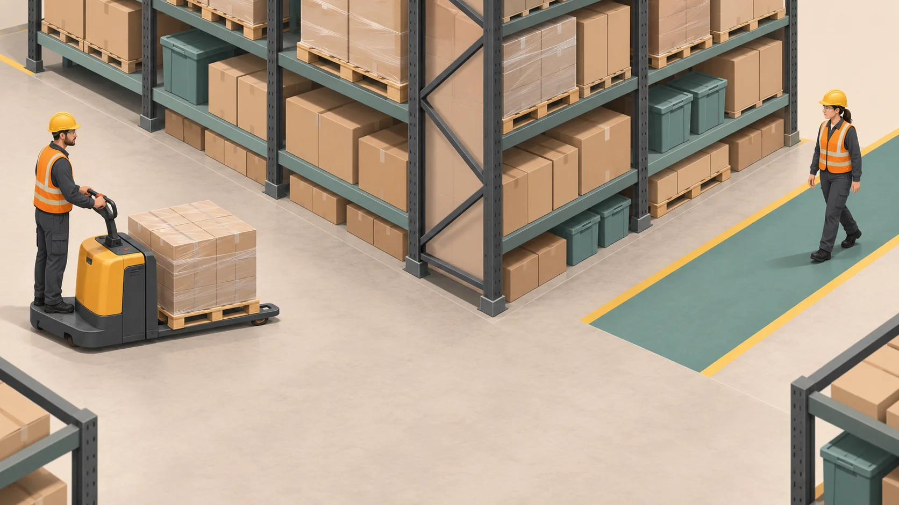

FIELD NOTE 01 / 08 · NOTICE / CONTROL / REPORT
One corner. Three decisions.
Listen to the lesson and task · optional audio
Read the lesson audio transcript
One corner. Three decisions. At fictional Bay 4, a truck stops just before a pedestrian at a blind corner. Nobody is hurt. The next shift will use the same route. Your challenge: notice the hazard, compare controls and report useful facts. Explore the scene, flip the recall cards and practise each decision. Allow 20–25 minutes. Read or listen on every page. In real work, follow current site instructions and authorised supervision. Before you continue, write one factual sentence about what the next shift needs to know. Keep your answer; you will return to it when you draft the report.
At fictional Bay 4, a truck stops just before a pedestrian at a blind corner. Nobody is hurt. The next shift will use the same route.
Your challenge: notice the hazard, compare controls and report useful facts. Explore the scene, flip the recall cards and practise each decision.
Allow 20–25 minutes. Read or listen on every page. In real work, follow current site instructions and authorised supervision.
FIELD NOTE 02 / 08 · 01 / NOTICE
Name the hazard, risk and control
Listen to the lesson and task · optional audio
Read the lesson audio transcript
Name the hazard, risk and control. Hazard: what could cause harm. Risk: how likely and serious that harm could be. Control: a measure that reduces risk. Watch the fifty-five-second video or read its transcript. Before revealing each card, explain hazard, risk and control in your own words. Then answer the practice question on the page. Question 1. Which description is the hazard? Choose one answer. Option 1. A moving pallet truck at a blind corner. Option 2. The chance and severity of someone being struck. Option 3. A barrier separating the routes. Pause the audio to answer, then use the on-screen feedback.
Hazard: what could cause harm. Risk: how likely and serious that harm could be. Control: a measure that reduces risk.
Watch the 55-second video. Then name each concept from memory before flipping the three cards. Apply the distinction in the practice question.
Read the video transcript
A hazard is something that could hurt a person or damage something. A moving forklift is one example. Risk means thinking about the chance of harm and how serious that harm could be. A pedestrian could be struck by the forklift and badly injured. A control is a safety step that removes the hazard or lowers the risk. First, consider whether the task can be done safely without a forklift in that area. If it is still needed, keeping pedestrians and vehicles on separate routes, with barriers where needed, helps keep people away from moving equipment. Signs, training and high-visibility clothing can support the workplace safety plan. Follow your site instructions. If a route seems unsafe, stop and report it to your supervisor.
Recall before you reveal
Think of an answer, then select a card. Select it again to return.
Match the concept to the case
Which description is the hazard?
Choose one response.
FIELD NOTE 03 / 08 · 02 / INVESTIGATE THE SITUATION
Separate facts from assumptions
Listen to the lesson and task · optional audio
Read the lesson audio transcript
Separate facts from assumptions. Known: ten ten, Bay 4, truck stopped before contact, no injury reported. Speed, distraction and the full cause are not established. Keep clear of vehicle routes. Investigation and changes belong to the authorised team. The scene shows a powered pallet truck to the left, shelving at the corner, and a pedestrian to the right. The shelving limits the view. It does not establish speed, distraction or the full cause. Inspect both markers, then rewrite “the pedestrian was careless” as an observation and a question for follow-up.
Inspect the scene: what can you observe, and what would need investigation? Open the hotspots, then compare the facts and unknowns in the tabs.
Known: 10:10, Bay 4, truck stopped before contact, no injury reported. Speed, distraction and the full cause are not established.
Keep clear of vehicle routes. Investigation and changes belong to the authorised team.
Inspect before you decide
Predict what needs checking, then open each numbered point.
Loading inspection scene…

Fictional warehouse: a pallet truck and pedestrian approach an obscured shelving corner. The illustration is a discussion scene, not an approved route design.
Moving equipment
What you can see: a powered pallet truck near a blind corner. What you cannot infer: its speed, the driver’s attention or the full cause. Keep clear and use the authorised reporting route.
The blind corner
The shelving limits the view. The picture does not establish the full cause or whether all route controls are adequate. Ask the authorised team to assess visibility and separation; do not enter the vehicle route to investigate.
Read the complete scene explanation
Moving equipment
What you can see: a powered pallet truck near a blind corner. What you cannot infer: its speed, the driver’s attention or the full cause. Keep clear and use the authorised reporting route.
The blind corner
The shelving limits the view. The picture does not establish the full cause or whether all route controls are adequate. Ask the authorised team to assess visibility and separation; do not enter the vehicle route to investigate.
Response guide and notes
Example: “A pedestrian and truck approached the blind corner at the same time. What route arrangements and visibility were in place?” This records the event without assigning an unsupported cause.
FIELD NOTE 04 / 08 · 03 / CONTROL
Choose a stronger control
Listen to the lesson and task · optional audio
Read the lesson audio transcript
Choose a stronger control. For Bay 4, suitable physical separation can reduce exposure. A reminder or vest does not remove the moving-vehicle hazard. Site assessment and authorisation determine the actual controls. Watch the control hierarchy video. After the video, compare the control proposals and choose the one that directly addresses separation. Use the explanation to check why signs and clothing alone do not remove the moving-vehicle hazard. Question 1. Which proposal acts directly on people and vehicle separation? Choose one answer. Option 1. Issue a brighter vest and change nothing else. Option 2. Ask the authorised team to assess separate routes with suitable barriers. Option 3. Tell pedestrians to guess whether a truck is coming. Pause the audio to answer, then use the on-screen feedback.
Which proposal reduces exposure most directly? Watch the control hierarchy, then compare removing the hazard, separating people from it and supporting safe work.
For Bay 4, suitable physical separation can reduce exposure. A reminder or vest does not remove the moving-vehicle hazard. Site assessment and authorisation determine the actual controls.
Read the video transcript
A control is a safety step that removes a hazard or makes harm less likely. Start at the top of the hierarchy where possible. First, elimination: remove the hazard. Could the task be redesigned so a forklift is not needed in this area, if a safe alternative is available? Second, substitution: replace the forklift with safer equipment that is suitable for the task. Third, engineering controls: separate people from the hazard, using separate routes or physical barriers. Fourth, administrative controls: change how work is organised, using signs, a one-way system, safe working rules and training. Fifth, personal protective equipment: wear the protection required by the workplace risk assessment. PPE does not remove the hazard and is usually the least effective control on its own. Controls can be used together. Follow your workplace safety plan.
What changes the exposure?
Select each level to compare what it contributes to Bay 4.
01 / Elimination · Remove the hazard
Could the task be redesigned so the forklift is not needed in this area, if a safe alternative is available?
02 / Substitution · Use a safer alternative
Assess whether safer equipment is suitable for the task. A change still needs site assessment and authorisation.
03 / Engineering · Separate people from the hazard
Assess separate routes and suitable physical barriers. This acts directly on exposure to moving equipment.
04 / Administrative · Organise and support safe work
Signs, safe working rules and training support the workplace plan. A reminder alone does not remove the moving-vehicle hazard.
05 / PPE · Support the assessed controls
Wear the protection required by the workplace risk assessment. A brighter vest alone does not remove the hazard.
Controls can work together. These are proposals for assessment, not permission to change a route or operate equipment. Follow the current site plan.
Which proposal acts directly on people and vehicle separation?
Choose one response.
FIELD NOTE 05 / 08 · 04 / APPLY
Make the next safe decision
Listen to the lesson and task · optional audio
Read the lesson audio transcript
Make the next safe decision. The next shift is starting. The corner has not been assessed. A colleague says: “Nobody was hurt, so carry on.” Keep clear of the unsafe situation, report the facts and seek authorised instructions before continuing if the route still seems unsafe. Do not improvise traffic management or move barriers. Explain why no injury does not mean no action is needed. Answer the decision question, then compare your explanation with the feedback. Question 1. Nobody was injured in the close call. What follows? Choose one answer. Option 1. There is nothing to report. Option 2. It proves the route is safe. Option 3. Follow the site near-miss reporting process. Pause the audio to answer, then use the on-screen feedback.
The next shift is starting. The corner has not been assessed. A colleague says: “Nobody was hurt, so carry on.”
Keep clear of the unsafe situation, report the facts and seek authorised instructions before continuing if the route still seems unsafe. Do not improvise traffic management or move barriers.
In an emergency, follow the site emergency procedure. What would you say to the colleague?
Nobody was injured in the close call. What follows?
Choose one response.
FIELD NOTE 06 / 08 · 05 / REPORT
Turn the close call into learning
Listen to the lesson and task · optional audio
Read the lesson audio transcript
Turn the close call into learning. Reporting starts the loop. An owner must follow up and check whether agreed controls work. Watch the near-miss video, then write a four-sentence report using the fictional facts. Include the time and place, what happened, immediate action and one uncertainty. Open the example only after your attempt.
Watch for four parts of a useful report: what happened, where and when, immediate action, and uncertainty.
Draft a four-sentence report using the fictional Bay 4 facts. Try it before opening the example below.
Reporting starts the loop. An owner must follow up and check whether agreed controls work.
Read the video transcript
You are using a powered pallet truck. At a blind corner, you stop just in time to avoid hitting a colleague. No one is hurt. This is a near miss. Stop the truck in a safe place and check that your colleague is safe. Tell your supervisor and follow your site's reporting process. Say what happened, where it happened and when. Give the facts you know. If you do not know something, say that you are not sure. Follow your site's rules. If you think the route is still unsafe, ask your supervisor what to do before you continue. Reporting a near miss gives the workplace a chance to learn and reduce the risk of it happening again.
Build the report from facts
Match each report component to the fictional fact. Then use the four parts to write your own version below.
Response guide and notes
Example report
“At 10:10 near Bay 4, a powered pallet truck and a pedestrian approached the blind corner. The truck stopped before contact and no injury was reported. The adequacy of the route arrangements is not yet established. Please advise on the next authorised step and who will follow up.”
It records the event, location, time and immediate outcome, makes uncertainty explicit and asks for follow-up without assigning blame.
FIELD NOTE 07 / 08 · 06 / CHECK YOUR JUDGEMENT
The six-question challenge
Listen to the lesson and task · optional audio
Read the lesson audio transcript
The six-question challenge. Six decisions. Attempt each question before reading its explanation. If you change your answer, explain which cue changed your mind. Pause after each question to choose your response, then read the feedback. You may retry. Question 1. At a loading-bay crossing, a powered truck passes close to a person. Which entry identifies the hazard? Choose one answer. Option 1. Moving equipment sharing the crossing with pedestrians. Option 2. The likelihood and severity of someone being struck. Option 3. The separate pedestrian route proposed afterwards. Pause the audio to answer, then use the on-screen feedback. Question 2. A different loading area has frequent pedestrian crossings. Which proposal addresses exposure most directly? Choose one answer. Option 1. Repaint footprints while retaining the same shared crossing. Option 2. Have the authorised team assess removing the shared crossing through suitable separation. Option 3. Repeat the induction while leaving the layout unchanged. Pause the audio to answer, then use the on-screen feedback. Question 3. A close call was reported last week, but the view at the corner is still obscured. What should you do now? Choose one answer. Option 1. Treat the earlier report as confirmation that the concern is resolved. Option 2. Continue as usual until the investigation reaches a conclusion. Option 3. Keep clear of the unsafe situation and raise the current concern through the approved route. Pause the audio to answer, then use the on-screen feedback. Question 4. Which line belongs in a factual report? Choose one answer. Option 1. The driver was obviously careless. Option 2. At ten ten near Bay 4, the truck stopped before reaching the pedestrian. Option 3. The pedestrian must have been distracted. Pause the audio to answer, then use the on-screen feedback. Question 5. A supervisor asks whether a mirror would solve the problem. What is the best response? Choose one answer. Option 1. Assess visibility and the wider route controls rather than assume one measure is sufficient. Option 2. Say yes because a mirror is cheaper. Option 3. Fit the mirror yourself without authorisation. Pause the audio to answer, then use the on-screen feedback. Question 6. When is the learning loop strongest? Choose one answer. Option 1. Once the report has been sent, regardless of action. Option 2. When the team assigns action, checks the control and shares learning through the site process. Option 3. When everyone agrees not to mention it again. Pause the audio to answer, then use the on-screen feedback.
Six decisions. Attempt each question before reading its explanation. If you change your answer, explain which cue changed your mind.
These are practice activities with no pass threshold. Use the scenes, videos and notes when useful.
FIELD NOTE 08 / 08 · 07 / TRANSFER
Your next-shift commitment
Listen to the lesson and task · optional audio
Read the lesson audio transcript
Your next-shift commitment. You are starting the next shift at fictional Bay 4. A report has been sent, but you have not yet been told whether the corner is ready to use. Plan how you will check before continuing. Use the fictional case and the site’s authorised process; do not invent a new route or control. Write a four-sentence next-shift plan for Bay 4 in the response box. First, say what you will confirm before using the route. Second, say what you will do if it still seems unsafe. Third, identify who you will contact through the site reporting process. Fourth, state the follow-up question you will ask. Use the fictional case; do not invent a new route or control. After writing, compare your plan with the example and use the pocket checklist as a reminder.
You are starting the next shift at fictional Bay 4. A report has been sent, but you have not yet been told whether the corner is ready to use.
Plan how you will check before continuing. Use the fictional case and the site’s authorised process; do not invent a new route or control.
Writing stays in this open page and is never sent to an LMS.
Compare with an example plan
“Before using the Bay 4 route, I will ask the authorised supervisor to confirm the current route instructions and whether the corner is ready to use. If it still seems unsafe, I will keep clear and seek instructions before continuing. I will report the concern and known facts to the authorised supervisor through the site process. I will ask who owns the action and when the agreed controls will be checked.”
Adapt the pattern to current site instructions. This is a fictional example, not an approved route or equipment instruction.
Download the pocket checklist ↓
Sources and further reading
HSE: Separating pedestrians and vehicles · HSE: Risk assessment. Checked 15 November 2026.
Three short Synthesia videos support the fictional Bay 4 case. Course design and learning activities: Patrick Ordish.